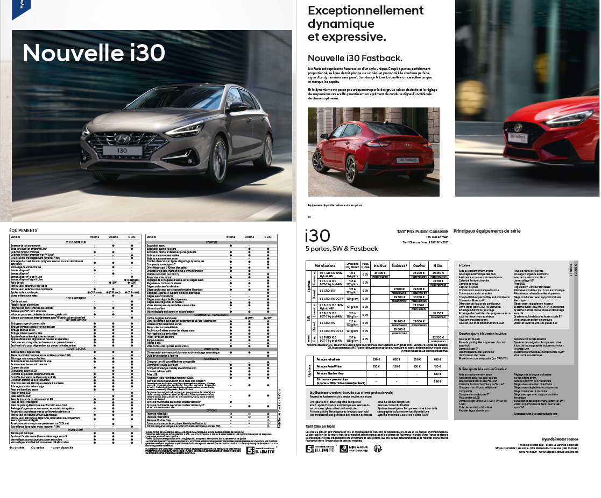
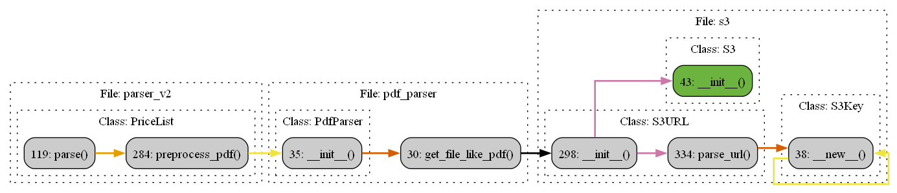
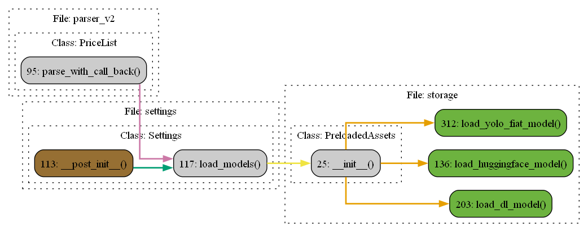
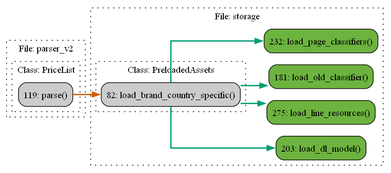

Setting up
We begin with the mundane yet essential steps: setting up the logger, loading all resources from S3, and fetching the PDF from the Vehicle Editor database. Additionally, we obtain supplementary details about the PDF, like the brand and super-model of the vehicles, and the country where they’re sold.
PDF
Our pipeline begins by getting the PDF file and all further steps are based on data found in it. In this documentation we will use the recurring example of PDF with ID: 275. Below we provide four sample pages, containing a mixture of images, text and table to illustrate the problem setting.
{kind=link}
The flow of code to get the PDF, is as follows:
{kind=link}
Web services
Amazon Web Services
This project is deployed using Amazon Web Services (AWS) and is using them at most steps. In particular the code is usually run on a “Lambda” and the external data is stored on “S3” storage service.
Vehicle Editor
The other resource being used is the Vehicle Editor owned by Preskok. It is a database containing lists of engines, drivetrains, brands, models, etc. as well as the specific combinations of them all as found on price-lists.
It serves both as a source of information and PDFs, as a target when matching engines (and other components) and as ground truth when validating combinations.
Key object being set up
Three objects are being set up in the initialization step:
Settings
Parser has some default settings on which it operates. For example, when encountering two different prices for the same car the larger one is taken. In some cases this default behaviour must be ovveridden – usually based on either the brand or country of the pricelist. This is done at the beginning, and then this object is carried all the way throughout the pipeline.
Summary
Some data about the PDF is given as the input. This information is stored in the Summary object, which is also carried throughout the pipeline. The main attributes are the brand, country, supermodel, price_list ID.
Storage
Final object contains all the resources loaded from S3. These are all the machine-learning models, as well as some dictionaries containing mappings for different terms.
Some of these resources are country or specific, others are not, so the process is done in two steps:
 {kind=link}
{kind=link}